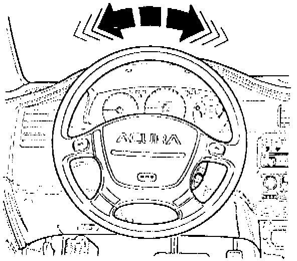
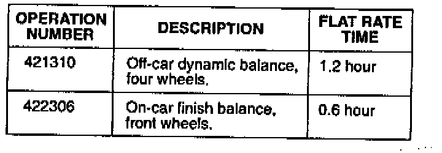

Steering Wheel - Oscillates or Shimmies
YEARALL
MODEL
ALL
VIN APPLICATION
ALL
BULLETIN NO.
94-010
August 23, 1994
Steering Wheel Shimmy
SYMPTOM
The steering wheel oscillates, or shimmies, when driving between 58 and 62 mph. It may be most noticeable on smooth roads, and may vary with slight steering inputs.
PROBABLE CAUSE
An imbalance of the wheel/tire/hub/rotor assembly in the front end.
CORRECTIVE ACTION
Dynamically balance the wheel and tire assembly off the car. Then, if necessary, use the Hofmann Finish Wheel Balancer to balance the wheel/tire/hub/rotor assembly on the car.
1. Drive the car on a smooth surface between 58 and 62 mph. Turn the steering wheel slightly, and allow the steering to self-center. Repeat this several times and observe the steering wheel motion.
^ If the steering wheel does not oscillate, or the movement is different than shown below, the car does not have an imbalance problem. Do not continue with this procedure.

^ If the steering wheel oscillates as shown, continue with this procedure.
2. Dynamically balance all four wheel/tire assemblies off the car. Make sure the balancer is capable of balancing to an accuracy of within 5 grams. Use only Honda wheel weights (see PARTS INFORMATION).
NOTE:
To verify the balancer's accuracy and calibration, refer to the DYNAMIC OFF-CAR WHEEL BALANCER CALIBRATION CHECK.
3. Reinstall the balanced wheel/tire assemblies and torque the wheel nuts to 80 lb.ft. Do not use an impact wrench to snug up or torque the wheel nuts; it may damage or distort the wheel and cause steering wheel oscillation.
4. Road test the car and check for steering wheel oscillation. If it still oscillates, use the Hofmann Finish Wheel Balancer to do a finish balance on the front wheel/tire/hub/rotor assemblies.
NOTE:
Refer to section 4 of the Hofmann DAFB-10 Finish Wheel Balancer Operator's Manual that came with the unit for detailed instructions.
DYNAMIC OFF-CAR WHEEL BALANCER CALIBRATION CHECK
Use this procedure to determine if the balancer is accurate to within 5 grams of imbalance. If the balancer is not accurate to within 5 grams, it must be calibrated or repaired before being used to correct a steering wheel oscillation problem. You will need an Acura factory or accessory alloy wheel only, with no tire mounted, to perform this procedure.
1. Before starting, make sure the wheel has no balance weights. Perform a static balance, adding weights as necessary to only one side of the wheel.
2. Loosen the wheel, rotate it 90~, tighten the wheel, and recheck the balance. Repeat this three more times, until the wheel returns to its original position. The balancer should not indicate any more than 5 grams of additional weight is needed during this procedure. If more than 5 grams was indicated,' calibrate or repair the balancer.
3. Remove the weights just installed. Make sure the balancer is set to its finest balancing mode (accuracy within 5 grams).
4. Perform a dynamic balance, adding weights as indicated by the balancer to both sides of the wheel.
5. Once the wheel is in dynamic balance, add an additional 5 grams at any point on the rim and recheck the balance.
The balancer should indicate that 5 grams is needed on the same side of the wheel at a point exactly opposite the weight you added. If so, the balancer is in calibration.
If the balancer indicates that more than 10 grams is needed, or the indicated position is more than 1.5 inches from the point exactly opposite the weight you added, then the balancer needs calibration or repair.
PARTS INFORMATION
Wheel weights for alloy wheels:
5 grams P/N 44726-SM1-A01
10 grams P/N 44721-SM1-A01
15 grams P/N 44727-SM1-A01
20 grams P/N 44722-SM1-A01
25 grams P/N 44728-SM1-A01
Wheel weights for steel wheels:
5 grams P/N 44726-SHO-A01
10 grams P/N 44721-SM4-000
15 grams P/N 44727-SM4-003
20 grams P/N 44722-SM4-003
25 grams P/N 44728-SHO-A01
WARRANTY CLAIM INFORMATION
In warranty:
The normal warranty applies.

Out of warranty:
Any repair performed after warranty expiration may be eligible for goodwill consideration by the District Technical Manager or your zone Office. You must request consideration, and get a decision, before starting work.
Failed part: P/N 42700-SD4-A82
Defect code: 045
Contention code: B99